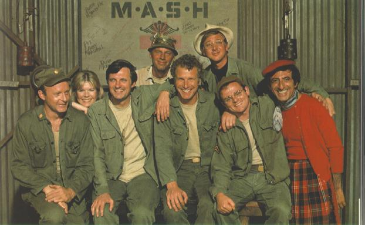
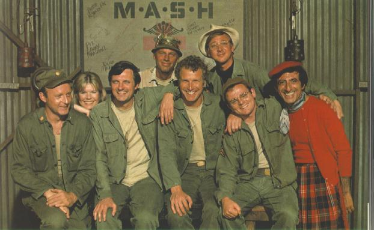

M*A*S*H
 M*A*S*H is a show about a hospital unit in the Korean war. I like it because it is funny. Each charecter is different and watching them learn to get along is cool.
 M*A*S*H is a show about a hospital unit in the Korean war. I like it because it is funny. Each charecter is different and watching them learn to get along is cool.
 Star Trek is a science fiction show about people exploring the galaxy. There are a lot of different series of Star Trek, but my favorite is Star Trek Voyager. It is very futuristic and has a lot of interesting creatures in it.
Star Trek is a science fiction show about people exploring the galaxy. There are a lot of different series of Star Trek, but my favorite is Star Trek Voyager. It is very futuristic and has a lot of interesting creatures in it.